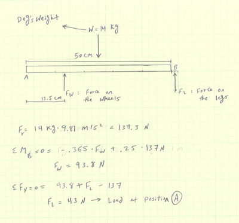
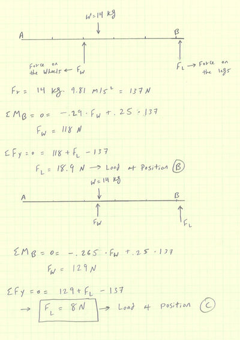

Dog walker
Contents
|
Abstract
A local family in Cookeville, TN adopted a dog after her owners died. The dog's name is Katie Poo. The dog was affected by a disease called degenerative myelopathy about a year ago which caused her to lose all senses in her back legs and therefore her legs don't function properly. Now the dog is in need of assistance in order to move around with ease.
Team members
Problem Statement/overview of the need
The dog was affected by a disease about a year ago which caused her to lose her senses in her back legs and therefor her legs don't function properly. Now the dog is in need of assistance to help support the back part of her body and help her walk.
Design Specifications
3D Printing (Nylon)
Dog weight : 30 lbs
Allowable support : 20 lbs
Two Casters (Easy to roll on carpet)
Straps and velcro for legs support and body seating
Background research
There is a variety of products out there that are currently used for such cases. Our primary source for learning about other products is the family of the dog. They have tried multiple products and therefore will be able to provide us with details on exactly what they are looking for.
Existing Products
Conceptual Design
Summarize your conceptual design process. Develop at least three concepts.
Design Concept 1
- Description
3D Printed Supports, smooth rolling caster, and Velcro straps will be used for this design concept. The reason why I chose 3D printing is because it allows for light weight which is hugely significant for this project because the dog is fairly small and weak and whatever we come up with has to be light. Velcro straps will be used to support the back legs against the legs of the walker and will also be used to protect the dog on the walker after she is seated. And the casters will have to be smooth and easily roll on carpet since the dog stays indoor most of the time.
- schematics/pictures/drawings
View 1
View 2
- estimates on performance/simple calculations if needed
This design will allow for easy transportation due to light weight and smooth rolling casters.
Design Concept 2
This design concept has adjustable wheels which can rotate and translate easily so it will be easy to change the position of the wheels based on the dog's needs and comfort. Also, since it is pretty hard for the dog to use her back legs at all, I designed a strong seat which doesn't require a lot of effort to move around.
3D printed plate with Aluminum support and purchased wheels
Design Concept 3
In this design the main frame is made out of square aluminum tubing for a lightweight support, the front and back of the wheelchair also will support the dog's lower half of her body with nylon straps that that are attached at each end. There are also foot straps for the dog's hind legs so she will not have to drag them as she moves around. All the straps will be padded with a thick foam material for comfortability.
Evaluate concepts/select candidate
After the preliminary design presentation and meeting up with the family and learning about their existing dog walker, we came to the conclusion that it would be best to modify their existing walker rather than starting from scratch. Note: Existing dog walker is worth $650 and is adjustable
Detailed Design
Initially when we had first seen the walker, we decided to add another set of wheel for support since we noticed that Katie's front legs were fairly week. The more time we spent observing the walker the more we learned about it. We learned that it was possible to reposition the existing wheels and move them forward which would serve the same purpose of distributing the weight and taking some load off of Katie's front legs.
Description of selected design
We visited the family once more and started by moving the wheels more towards the center of the walker. Then we saw significant improvement. Then we decided to move the wheel all the way to the front. Now it's safe to say that we have definitely came a long way and that Katie has better use for the walker and is more accepting of it and is more comfortable in it.
Detailed description of selected design
Engineering analysis 1
Part of our analysis to coming up with this solution was drawing some FBDs. It wasn't long before realizing that the load on the front legs was a little to heavy for Katie. We also noticed that the closer we moved the back wheels to the front legs, the less load applied to the front legs. Therefore, it would be much easier for Katie to move around using it.  
Engineering analysis 2
The wheel is mounted to the bar shown above, the bar has different slots which allows the wheels to be re-positioned. Initially when we started the wheel was at point A where the greatest amount of load was applied to her front legs. After moving three more slots the load was significantly reduced. Then finally after placing the wheel at its last slot the dog was able to move with the most freedom it has had since obtaining this wheelchair.
Engineering analysis 3
CAD Drawings
Insert drawings of all parts and the assembly
Bill of Materials
qty, item, description, source, part number, price
Assembly Instructions
Fabrication Process
Insert pictures of fabrication process
Testing and implementation
After moving the wheel, Katie was able to move easily. The family was really happy with the outcome.
Photos of Completed design
Dog walker with wheels in initial position>
Dog Walker with wheels in new position>